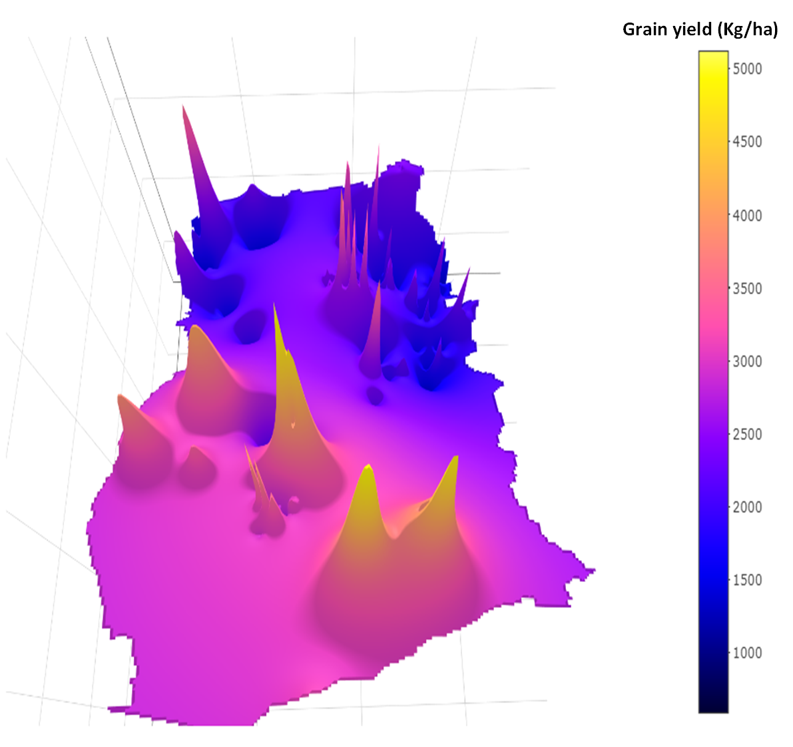

Featured Portfolio
These projects include Geospatial Analysis, Software Development and Research
See more at All Portfolio

Geostatistical Analysis
IFDC-FERARI

Machine Learning Analysis
PhD Research Assistance

Mayor's Enigma (Best Student Project)
M.Sc. Student Project, TUD, Germany
Happy Housing
M.Sc. Student Project, TUM, Germany

Real Estate Sales Map
Where Geospatial
DIGITAL SOIL MAPPING
M.Sc. Student Project, TUW, Austria

SOS4ALL (Best Student Project)
M.Sc. Student Project, TUW, Austria